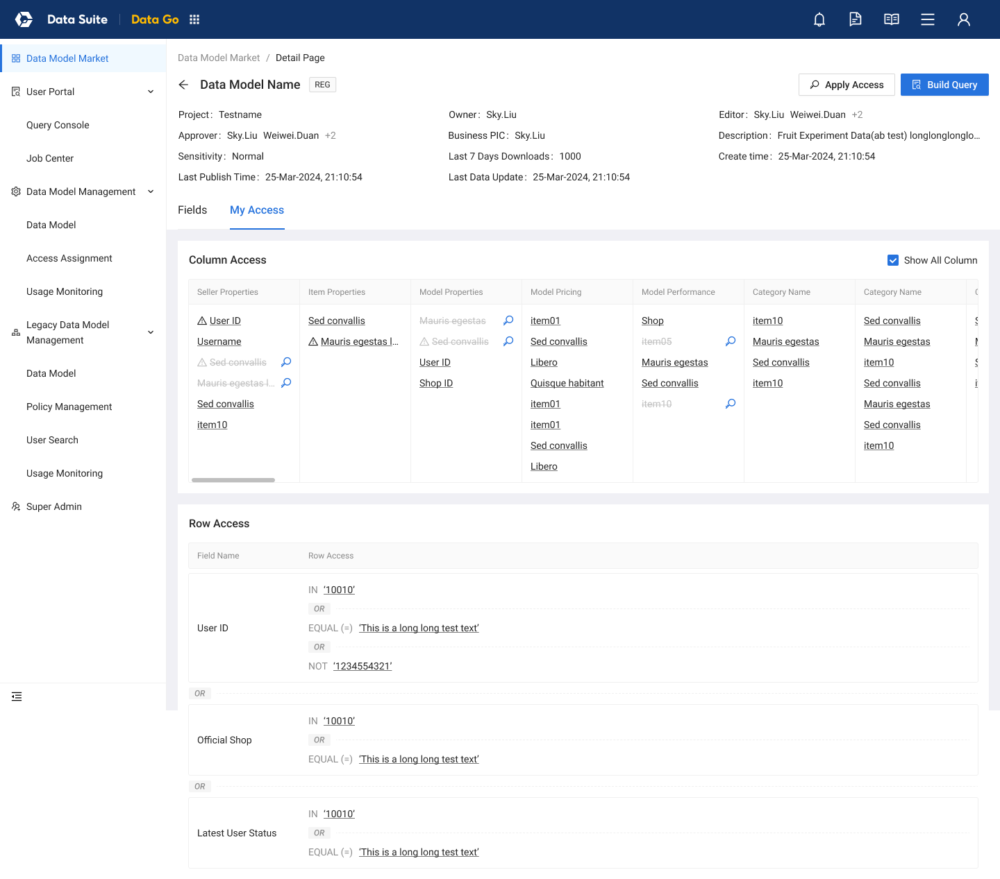

01 / 平台与工作路径
先理解数据怎样被生产，也理解它怎样被使用。
开始支持 DataSuite 时，我进入的是已经拥有完整产品体系和界面的成熟平台。数据工程师要接入、加工并运行任务，BI 与分析人员要理解数据和业务口径，业务用户希望取数、看报表，应用开发者则可能通过 API 使用数据能力。同一平台中的不同角色，有不同的工作入口和判断依据。
我从 DataGo、Flink 等具体产品切入，逐步梳理数据资产、开发任务、运行实例、访问权限和共享资源之间的关系。平台全景帮助我理解一个局部改动会触及哪些上下文；具体任务则让我看到，哪些关系必须被翻译成清楚的界面与反馈。
蓝色 ↗ 展开设计案例 灰色 平台其他产品
数据接入
不同源的数据进入目标存储
探索与开发
查询、脚本、管线与实时作业
运行保障
依赖、实例、质量、时效与灾备
资产与口径
发现、元数据、血缘与业务定义
数据消费
取数、看板、API 与 AI 分析等入口
专业数据形态
湖仓、图数据和日志等专业场景
组织、资源与访问
组织、团队、项目、资源与访问
治理与公共支撑
成本、协作与公共支撑
- 生产者视角
- 接入 → 开发 → 运行与质量保障。数据工程师关注任务、依赖、资源和运行实例；实时与批处理有不同运行逻辑。
- 消费者视角
- 发现与理解 → 获得访问 → 按任务使用。BI、分析人员、业务用户与应用开发者分别进入取数、看板或 API 等工作。
这张地图按工作目的整理平台能力。接入、加工与运行保障构成生产数据的一条典型主线；取数、看板和 API 是面向不同任务的消费方式。它们共享数据、组织与权限等上下文，用户会按工作需要进入不同产品，而不是依次使用完所有模块。
02 / 角色与任务
从角色出发，重新组织 DataGo 的入口。
DataGo 让用户从准备好的数据模型中选择字段、设置条件并取数。我在改版中先区分数据消费者与模型维护者：业务、运营、营销、产品等人员主要关心能取到什么、怎样配置查询；模型维护者还需要选表、配置字段、分配访问范围和查看使用情况。同一个人也可能兼有两类职责。
原有走查里，入口与任务之间存在具体错位：消费者会在模型页看到不可用的编辑按钮，My Profile 集中了多类权限入口和保存的查询，新旧模型的管理逻辑也不容易区分。我据此重整导航，将模型发现、用户取数与模型维护放到各自清楚的位置。
两类任务，各有清楚的位置。
- 数据消费者 · 找到模型，完成取数
- Model Market：发现与理解模型；Query Console / My Queries：配置与复用查询；Job Center：查看与管理任务。
- 模型维护者 · 维护模型，分配访问
- Data Model：模型与字段；Access Assignment：授权范围与用户；Usage Monitoring：使用情况。
- Legacy Data Model Management
- 新旧模型共存时，为旧体系保留明确的管理入口。
Model Market 用于发现与了解模型；Query Console、Job Center 围绕日常取数组织；Data Model、Access Assignment、Usage Monitoring 对应维护工作。我也把保存的查询放回 My Queries，让它靠近用户实际配置和使用查询的位置。
旧模型体系保留独立的 Legacy 入口。原有 System Model 已有逐步退出、以问题修复为主的投入安排，我在设计中需要兼顾新旧共存与改造成本。清楚的入口让用户继续完成已有工作，也让新的组织方式有可执行的改造范围。
03 / 配置查询
把一次查询展开为可检查的配置。
进入取数任务后，我把模型、输出字段、筛选条件、排序与数量限制直接组织在工作区中。原来需要连续进入弹层才能看到的配置，现在能够逐项查看、调整，并放在一起确认查询意图。
让一次取数请求可以逐项检查。
- 01
选哪个模型
确认数据来自哪里，以及模型相关说明。
- 02
输出哪些字段
查看已选字段与顺序，检查结果的组成。
- 03
这次需要哪些数据
把本次条件放在模型和字段的上下文中。
- 04
怎样排列与限制
补充输出排序及数量范围。
这里还需要区分相近却不同的对象。保存的查询记录取数配置，任务承接执行安排，每次执行又有自己的状态和结果。我在梳理中关注这些层次，避免用户只看到相似的列表，却无法判断正在编辑配置、管理任务，还是查看某一次运行。
发现模型，进入取数工作区
先找到可用的数据模型
Data Go v2.0 终稿：模型发现独立为入口；导航把取数、模型管理和 Legacy 管理分开。
DataGo v2.0 · 终稿

把查询的组成直接摆出来
Data Go v2.0 终稿：Select Model、Output Columns、Apply Filters、Sort and Limit 分区；My Queries 在查询工作区内。
DataGo v2.0 · 终稿

DataGo v2.0 · 终稿 · 我的工作：角色与任务组织、导航及查询体验设计。
04 / 查询与权限
授权范围与查询条件，各自回答一个问题。
DataGo 的“筛选”容易让两种概念看起来相同：权限规定用户最多可以访问哪些行、哪些列，本次查询条件决定在允许的范围内取出什么。我把权限放回明确的模型上下文，通过 My Access 帮助消费者检查自己的范围，再在查询工作区表达本次取数意图。
在维护一侧，Access Assignment 将模型、行列范围与被分配用户放到一起。仅列出一串规则仍然不容易理解，我用小表格把组合授权后的可访问区域显示出来，让规则与实际数据位置相对应。
查询可以缩小范围，不能扩大授权。机制示意 · v2.0 原稿中的一个授权示例
行：col1 in (2) OR col2 in (3)列：col1、col2
| 原数据 | col1 | col2 | col3 |
|---|---|---|---|
| row1 | 1 | 4 | 5 |
| row2 | 2 | 4 | 6 |
| row3 | 4 | 3 | 4 |
| row4 | 5 | 5 | 6 |
本次可以取到 row2、row3 的 col1 与 col2；col3 不在授权范围内。
新旧模型的授权规则并不完全相同。这里展示的是 v2.0 原稿中的具体组合示例；在设计中，我需要让模型上下文和规则说明留在用户能够找到的位置，避免把相同的“权限”名称误读成处处一致的行为。
把权限放回模型和数据位置
从一个模型查看“我能用哪些数据”
Data Go v2.0 终稿：My Access 展示列权限与行条件；权限范围与本次查询条件是不同概念。
DataGo v2.0 · 终稿

用一个小表格解释组合授权
Data Go v2.0 终稿：Access Assignment 的说明将行条件与列权限的最终交集着色。这是该授权方案的原稿说明，不能套用于所有 Legacy 规则。
DataGo v2.0 · 终稿

DataGo v2.0 · 终稿 · 我的工作：模型访问范围与权限分配的交互表达。
05 / 批量升级
一次批量升级，要保留每个应用的结果。
Flink Platform 面向数据工程师的作业开发与运行。一个 JAR 程序或依赖包可能被多个应用使用，更新它会牵涉多个对象及一连串动作。在 v2.4／v2.4.1 中，我从这类重复工作进入，设计批量升级的范围选择、版本配置与执行反馈。
升级首先需要回答哪些应用相关、哪些可以操作。Related Applications 将关联应用、环境、状态与限制放在同一位置；用户选择应用后，再确认 JAR 版本和通知方式。批量处理减少重复配置，同时仍保留各应用的不同条件。
我把执行反馈拆为一次操作、单个应用、应用内步骤三个层次。整体 Done 说明这次操作已经结束，应用仍可能部分成功、部分失败；继续展开，才知道失败发生在提交新版本、停止应用还是启动应用。
整体结束之后，还要能看清哪里失败。讲解复现 · Flink v2.4 / v2.4.1
这一版的规则是某一步失败后停止后续步骤，已经成功的步骤不会自动回滚。因而失败位置和已完成的动作都必须保留，用户才能判断当前实际状态。这里的 JAR 批量升级覆盖 Job JAR 与 Dependency JAR；更广的产物关系在后续 Pipeline 设计中继续展开。
选择范围，再检查逐项结果
先辨认受影响、可升级的应用
Flink v2.4 / v2.4.1：JAR 详情下的 Related Applications，包含状态、环境与禁用说明。
Flink v2.4／v2.4.1 · 2023
把多次重复升级组织成一次配置
Flink v2.4 / v2.4.1：批量选择应用、指定 JAR 版本与通知方式；示例数量不是实际成效。
Flink v2.4／v2.4.1 · 2023
整体结束，不等于每个应用都成功
Flink v2.4 / v2.4.1：Done 下仍有 Successful / Failed；逐项显示提交、停止、启动步骤及错误提示。
Flink v2.4／v2.4.1 · 2023

Flink v2.4／v2.4.1 · 2023 · 我的工作：批量升级的范围、配置与执行反馈设计。
06 / 依赖与编排
让产物、应用与执行动作在同一张图里可检查。
到 v2.5，Pipeline 从生成 JAR 包扩展到操作应用与模板。我需要组织的不再只是构建配置，还包括生成哪些产物、关联哪些应用或应用组、在什么环境和维度执行什么动作，以及怎样查看校验与运行结果。
我用画布承接这些关系。多个产物可以走向不同的应用与执行分支，用户能够沿连接检查某个 JAR 会影响哪些对象。节点上的配置、校验提示与运行反馈保持对应，帮助使用者把全局关系与局部问题联系起来。
一组产物，可以走向多个执行分支。依赖关系示意 · Flink v2.5
从代码生成多个产物
Prod / UAT
环境与维度
执行规则也需要在界面中明确。一个 JAR 只关联一个 Pipeline，一个 Application Group 只由一个 Pipeline 操作，以避免相互冲突。Manual Trigger 与 Listen 分开，Save、Save & Listen、Save & Trigger 区分保存配置、监听触发和立即执行的后果。涉及下游的修改需要说明影响，缺失或重复的关联则在相关节点给出反馈。
我选择画布，是为了让这些依赖与动作可见。它的设计价值要落实到用户能否检查关系、定位错误和理解执行过程；这也是为什么配置状态与运行状态需要在同一组对象上保持连续。
依赖、运行与校验保持对应
让产物、应用与执行动作可见
Flink v2.5：原画板内的 Canvas 节点直接导出；展示 JAR 到应用的依赖、环境分支和操作配置。并非重绘示意。
Flink v2.5 · 2023-12 至 2024-01 设计记录

Flink v2.5 · 2023-12 至 2024-01 设计记录 · 我的工作：Pipeline 依赖与操作编排、节点反馈设计。
07 / Dashboard
在不同产品中，继续澄清作用范围。
Dashboard 的工作让我从另一种角度处理范围。看板构建者需要在工具、数据字段、配置与画布之间切换，我调整工作区结构，同时把筛选项与关联图表的配置明确呈现。筛选放在哪里，与它究竟影响哪些图表，需要分别表达；因此，我关注 Linked Charts 等关系，而不只调整控件样式。
配置位置与影响范围分别表达
工具、数据、配置和画布各有位置
Dashboard Revamp：收窄工具入口，数据字段与配置区紧邻画布；实际方案仍存在左侧配置，不能表述成全部移到右侧。
Dashboard Revamp · 2023-12 至 2024-01

筛选条件之外，还要配置关联图表
Dashboard Revamp：筛选项设置与 Linked Charts 分开，Filter Bar 有自己的样式及放置设置。
Dashboard Revamp · 2023-12 至 2024-01
局部入口，也要明确作用对象
Dashboard Revamp：Inner Filter 弹窗仍包含 Linked Charts 映射；仅凭名字无法断言只影响所在图表。
Dashboard Revamp · 2023-12 至 2024-01

Dashboard Revamp · 2023-12 至 2024-01 · 我的工作：编辑器布局与筛选交互；Filter Bar 与 Inner Filter 保留各自确认范围。
08 / 接口与访问
先读懂接口，再明确调用与管理范围。
在 Data Service 中，我把接口理解、调用准备与管理约束放回各自任务。API 详情说明归属、请求参数、嵌套结构与响应，访问申请具体到调用 APP、接口集合、有效期和理由；后续 Traffic Policy 则将限流、特殊 APP 配额、IP 黑名单等组织为可维护的策略，并通过绑定连接接口。
访问 API 的资格、允许的流量、被排除的 IP，以及编辑策略的权限，是不同控制。我的设计工作是帮助使用者看清每一种控制的对象和作用，再作出相应配置。不同版本的原稿保留各自范围，不把它们合并成一次完成的改版。
接口理解、访问申请与策略绑定
把 API 的使用契约呈现完整
Data Service v1.10：所属产品 / 服务、接口类别、请求参数、嵌套字段和响应示例；面向使用者理解调用要求。
Data Service v1.10／v1.10.1 · 2024

申请的是明确应用对明确接口的访问
Data Service v1.10：APP、所选 APIs、有效期和申请理由；审批与直接添加是不同设计状态。
Data Service v1.10／v1.10.1 · 2024

Data Service v1.10／v1.10.1 · 2024 · 我的工作：接口使用、申请与流量策略等设计；不同版本分别阅读。
09 / 渐进设计支持
在真实的组织与技术条件下，建立持续支持。
DataSuite 的支持条件与 Space 不同。我属于 Engineering Infrastructure，Data Infrastructure 是有自己管理、人员、项目优先级和资源安排的独立团队。跨团队改善体验，需要在具体业务里寻找可以共同推进的范围，无法直接沿用同组织内部的投入与协调方式。
技术存量也增加了改造成本。不同产品存在不同版本的 Ant Design、老旧页面及定制实现，并非都建立在相同组件基础上。整体统一涉及设计、工程改造和维护安排；我需要把关键任务的改善与这些实际成本一起考虑。
从适配能力，到具体业务中的采用。
- 共同基础 · 能够适配
- 主题与组件配置支持颜色、间距和风格等差异。
- 设计支持范围 · 逐步使用
- 有设计师支持的新需求与业务使用新的资产和支持方式。
- 全产品线与生产代码 · 尚未全量统一
- 存量技术、跨团队优先级和资源条件限制整体迁移。
我采取的是逐步建立支持的路径：先在 DataGo、Flink 等重点产品中理清角色、对象与复杂任务，在有设计师支持的新需求和业务范围内使用新的设计资产，再让成员带着已有认知与设计依据持续迭代。没有设计支持或新增设计需求的部分，继续保留既有实现。
InfraD 的主题与组件能力能够适配 DataSuite 在颜色、间距和风格等方面的差异，但可适配、部分业务使用与全平台生产迁移是不同阶段。DataSuite 并未完成全量统一。我的贡献落在具体产品的结构与交互改善、逐步形成的专业设计支持，以及后续团队能够接续工作的基础上。
当领域理解、设计基础和协作方式逐渐稳定，我再交给后续 PIC 和设计师接续。对我而言，进入一个成熟平台的价值，在于把陌生而复杂的业务翻译成可判断、可操作的体验，并让这种理解在团队中继续生长。
部分界面细节涉及企业内部信息，可在面试交流中结合 Figma 源文件展开介绍。